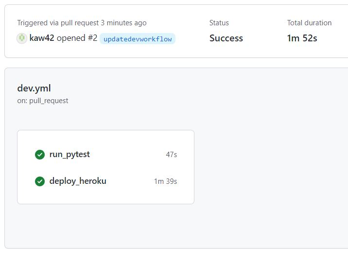
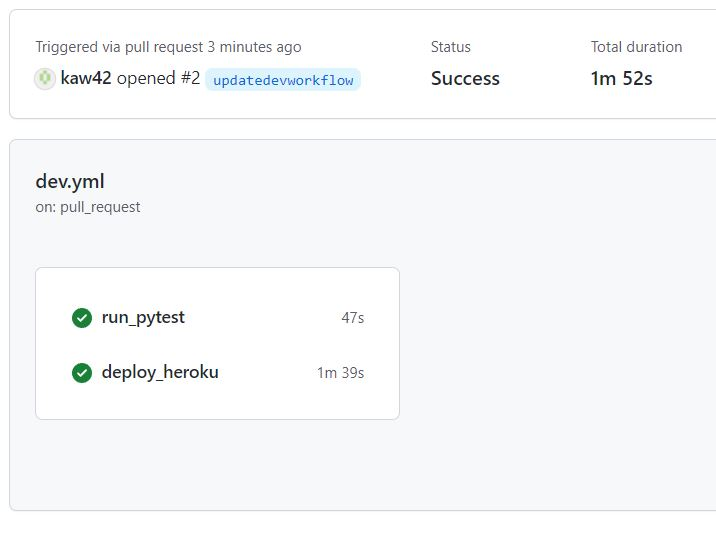

CI/CD is continuous integration and continuous development. CI/CD bridges the gaps between development and operation activities and teams by enforcing automation in building, testing and deployment of applications. According to the continuous delivery article, Martin Fowler explains that "The principal benefits of continuous delivery are: reduced deployment risk, believable progress, and user feedback" (Fowler 2013). Fowler also goes on to state in his continuous integration article, "Continuous Integrations doesn't get rid of bugs, but it does make them dramatically easier to find and remove. In this respect it's rather like self-testing code.
In order to have my project setup using GitHub actions, I had to add to actions in secrets. I added DOCKER_PASSWORD, DOCKER_USERNAME, and HEROKU_API_KEY. This allowed GitHub to access docker and heroku in order to ship the container and deploy the applications.
You can review code using a development server before merging pull requests by testing that the test files match the html files, this can result in either passes or failures. In this project, I used pytest to test my code in pycharm before merging pull requests.